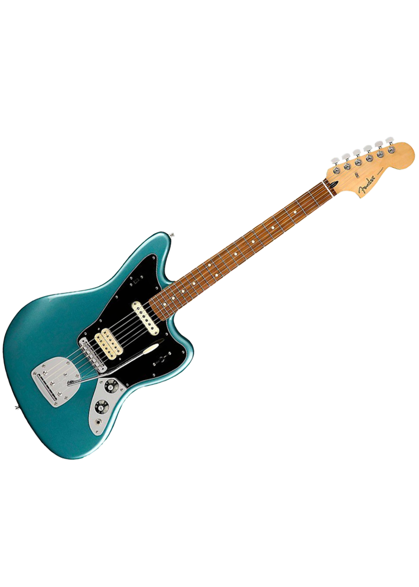

0

Fender Player Jaguar Pau Ferro Fingerboard Electric
Elegante, con estilo y con un sonido que es un toque moderno en nuestro sonido clásico, la Player Jaguar tiene una sensación única de furtividad. Te alienta a tocar de forma diferente, a buscar nuevos acordes y giros melódicos y a explorar nuevos sonidos y tonalidades. Decorada con reflectantes partes cromadas, tiene el sonido, las características y la sensación auténtica que inspiraron a innumerables artistas para escribir nuevas canciones y crear nuevos géneros de música.